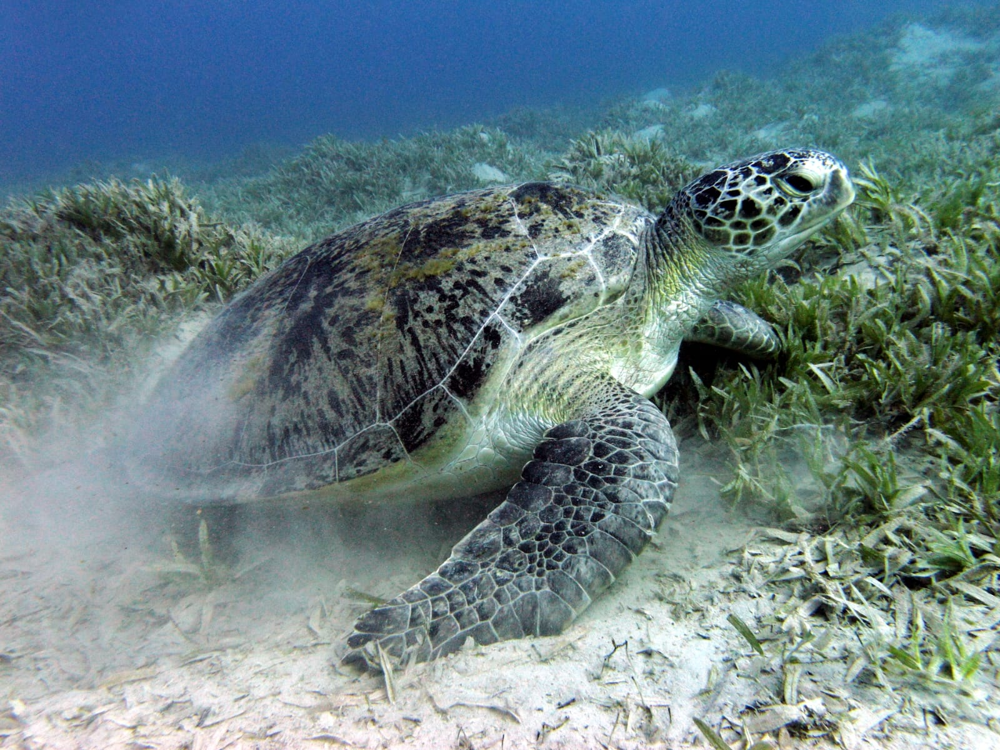
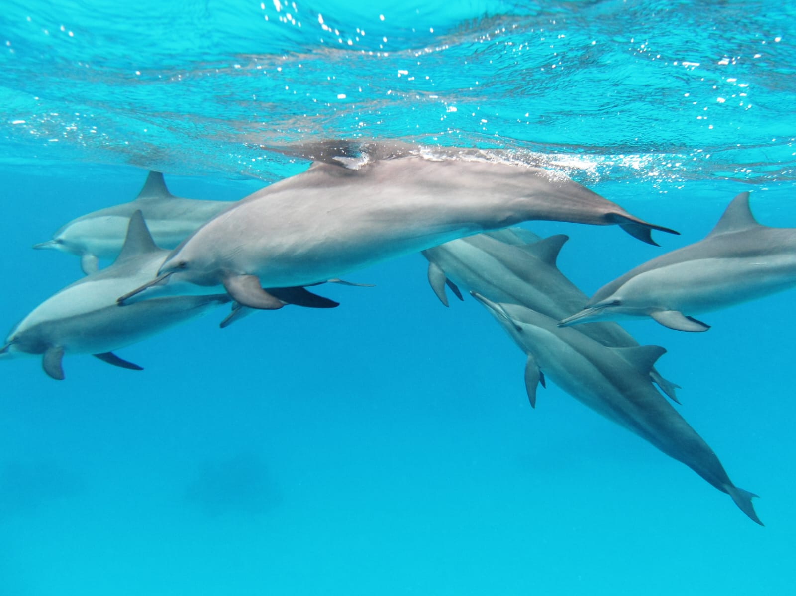
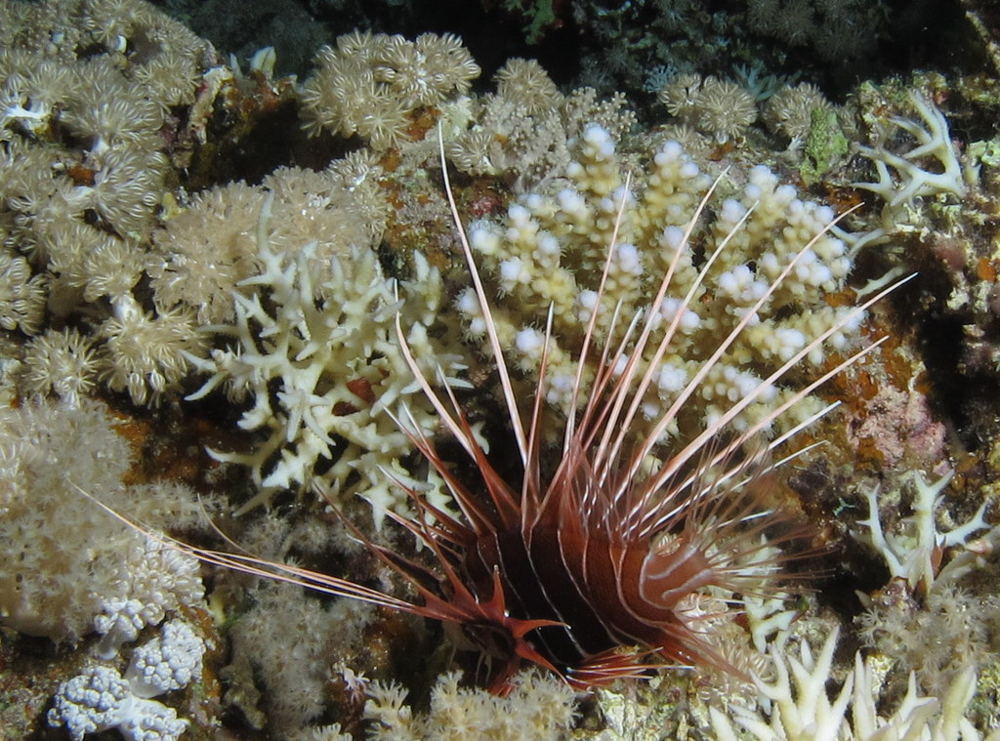

Discover the Wonders Beneath the Waves
The Red Sea is home to an extraordinary diversity of marine life, supported by warm waters, complex coral reef habitats, and a variety of coastal environments. Together, these conditions create a remarkable underwater world where many marine species thrive.
From colorful reef fish and graceful sea turtles to dolphins moving through open waters, every encounter reveals another part of the Red Sea's natural beauty. Exploring these creatures also helps us understand why healthy marine habitats are essential and why protecting them matters for future generations.
The Red Sea's Underwater Paradise
Coral reefs are among the Red Sea's greatest natural treasures. Built over time by tiny animals called coral polyps, these living structures create complex underwater habitats that support an extraordinary variety of marine organisms.
Coral reefs provide food, shelter, and breeding areas for many species, including reef fish and other marine creatures. They also contribute to biodiversity and help sustain the balance of the underwater ecosystem.
A World Worth Protecting
Despite their beauty, coral reefs are vulnerable to pollution, physical damage, careless tourism, and rising sea temperatures. Protecting these habitats helps safeguard the many species that depend on them and preserves the natural heritage of the Red Sea for future generations.
Meet the Incredible Creatures of the Red Sea
The Red Sea's underwater world is filled with fascinating animals, each with its own characteristics and role in the marine ecosystem. Discover some of the remarkable creatures that make this environment so special.

Green Sea Turtle
Green sea turtles are remarkable marine reptiles that depend on healthy coastal and ocean habitats. Protecting nesting beaches, reducing plastic pollution, and respecting turtles in the water can help support their survival.

Dolphins
Dolphins are intelligent, social marine mammals known for their communication and cooperative behavior. Responsible wildlife watching helps visitors appreciate these animals without disturbing their natural activities.

Red Sea Fish
The Red Sea supports a rich variety of fish, many of which live among coral reefs. These animals play important roles in marine food webs, helping maintain the ecological balance of their underwater habitats.
🐢 A Little Marine Advice
Take your time — even the turtles know there's no need to rush! 😄
Why Marine Life Matters
Marine life is essential to healthy ocean ecosystems. Different species contribute to food webs, nutrient cycles, and the balance of underwater habitats. Protecting marine biodiversity helps preserve these natural systems and the benefits they provide to people and future generations.
Learn how to protect marine life →